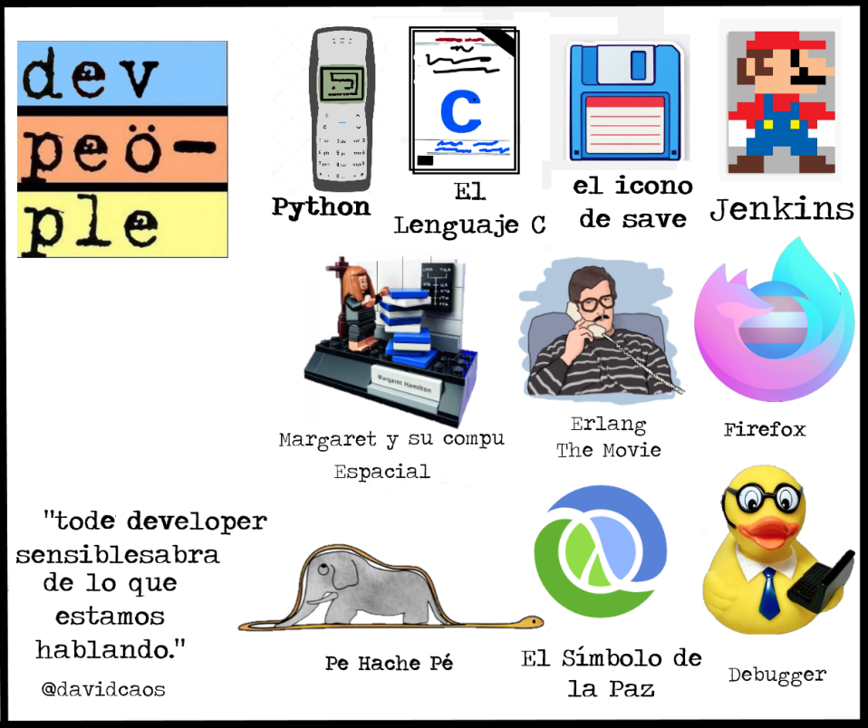
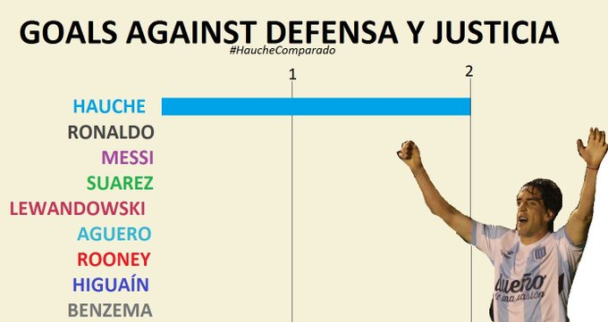

Developer
sustantivo. [de-ve-lo-per]
Toda persona involucrada en la producción del producto software
Fuente: 220V a 9V 1.5A
el Jardín de las delicias de Bosch
el Scrum is not Agile and the waterfall strawman
The dead March💀☠️
(proyectos destinados a fracasar desde su creación)
Es mas importante saber antipatrones,
que patrones (del libro de GoF)
Todo tiempo pasado fue mejor (?)
El MITO del 10x engineer

El Elefante en la Sala
"La meritocracia""